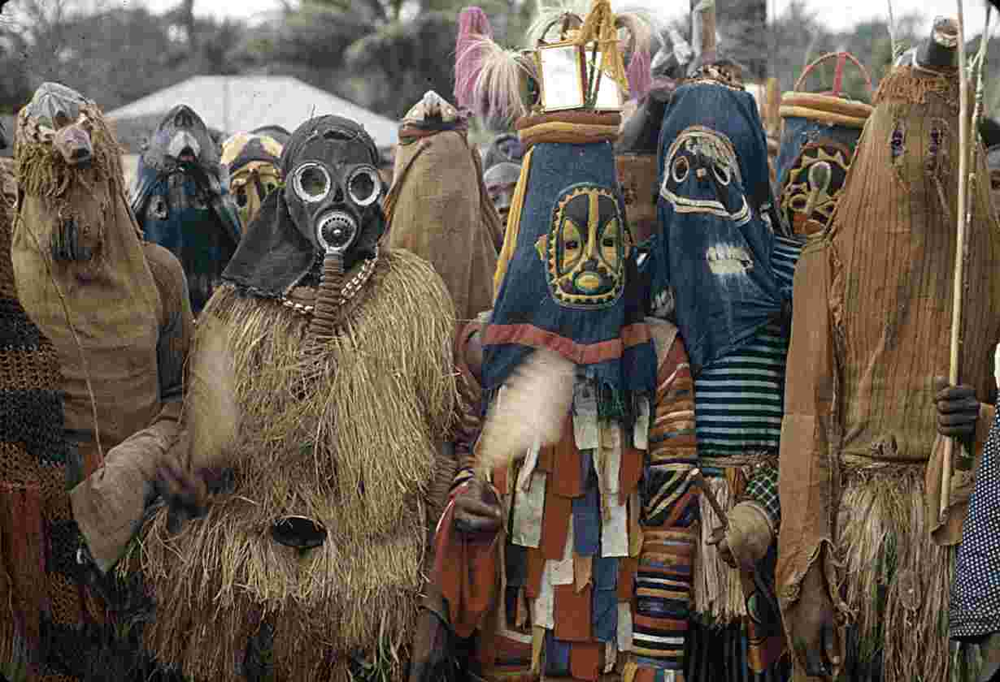
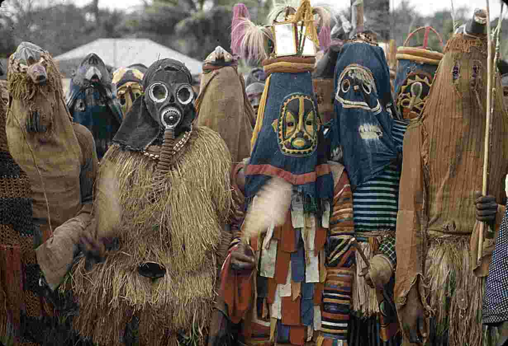

Traditions & Lifestyle
Nigeria is home to over 250 ethnic groups, each with unique customs, music, and cuisine. From Yoruba festivals to Igbo dances, the cultural diversity is unmatched.
Nigeria is home to over 250 ethnic groups, each with unique customs, music, and cuisine. From Yoruba festivals to Igbo dances, the cultural diversity is unmatched.
